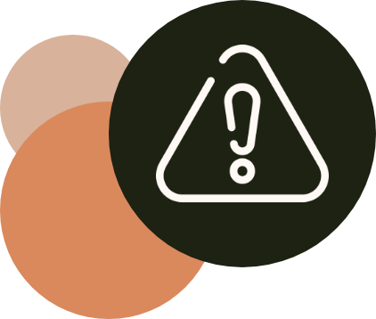

Die 4 Prinzipien sind: Wahrnehmbarkeit, Bedienbarkeit, Verständlichkeit und Robustheit.
.
GESETZLICHES

Barrierefreiheit ist im Internet kaum vorhanden.
Nur 25% der Onlineshops in Deutschland sind barrierefrei, während andere Websites sehr häufig WCAG-Fehler wie schwachen Textkontrast, keine Alternativtexte oder fehlende Steuerelemente aufweisen.
Jedoch soll ab dem 28.06.2025 das Barrierefreiheitsstärkungsgesetz in Kraft treten, das Unternehmen dazu verpflichtet die Europäische Norm für digitale Barrierefreiheit auf ihre Websites anzuwenden.
Die betroffenen Branchen wie das Finanzwesen müssen ihre Geldautomaten, sowie das Online- und Mobilbanking anpassen. Versicherungen müssen sicherstellen, dass der Zugang zu Anfragen und Versicherungsabschlüssen über Websites barrierefrei gestaltet ist. Das gleiche gilt für den E-Commerce, da Onlineshops und der dadurch erfolgende Produktverkauf auch barrierefrei sein muss.
Betroffen sind auch Personenbeförderung und Medien. Grundsätzlich müssen alle Apps und Websites, die eine Art der Interaktion aufweisen oder die Informationen bereit stellt barrierefrei gestaltet sein.
AUSNAHMEN
Ausgenommen von den Regelungen sind:
- Kleinstunternehmen mit weniger als zehn Beschäftigten und maximal 2 Millionen Euro Jahresumsatz
- Schulen oder öffentlich-rechtliche Medien, deren Angebot nicht für die Öffentlichkeit bestimmt ist
- bei einer „grundlegende[n] Veränderung“ (§ 16 Absatz 1 Satz 1 BFSG) des Produkts oder der Dienstleistung durch eine barrierefreie Gestaltung
- bei einer „unverhältnismäßige[n] Belastung“ (§ 17 Absatz 1 Satz 1 BFSG), sprich einem wirtschaftlichen Risiko durch die nötigen Maßnahmen
- für aufgezeichnete Videos und Dokumente, die vor dem 28. Juni 2025 veröffentlicht wurden
- für digitale Archive, deren Inhalte weder aktualisiert noch überarbeitet werden
ÜBERGANGSREGELN
Gewisse Unternehmen bzw. Produkte und Dienstleistungen unterliegen Übergangsregelungen, die teilweise bis Mitte 2030 oder sogar 2040 gelten:
+ 5 Jahre
Dienstleistungsverträge und Dienstleistungen unter dem Einsatz von Produkten, die schon vor dem Stichtag verwendet wurden, müssen erst ab dem 28.Juni 2030 barrierefrei sein.
+ 15 Jahre
Selbstbedienungsterminals wie Geldautomaten, die vor dem 28. Juni 2025 in Betrieb genommen wurden, müssen spätestens ab 2040 barrierefrei sein.
Dies wird stichprobenartig durch die Marktüberwachungsbehörde der Bundesländer überwacht. Bei Verstößen riskieren die Unternehmen je nach Schweregrad Bußgelder.
DIE WCAG
Die Web Content Accessibility Guidelines (WCAG) sind die weltweiten Richtlinien für barrierefreies Internet. Diese definieren Erfolgskriterien zur Umsetzung barrierefreier IT.
Herausgegeben wird diese vom World Wide Web Consortium bzw. von den Arbeitsgruppen Web Accessibility Initiative, allerdings kann sich jede Person an der Entwicklung des Standards beteiligen.
Die WCAG ist aktuell in seiner 4. Version, mit der WCAG 2.2. Allerdings ist die WCAG 3.0 bereits in Arbeit.
Die WCAG 2.1 besteht aus 4 Prinzipien, die die allgemeinen Anforderungen abdecken, 13 Richtlinien, also spezifischen Anforderungen und 78 Erfolgskriterien.
Die Erfolgskriterien werden in drei Gruppen aufgeteilt. Den Minimalanforderungen A, den mittleren Anforderungen AA und den höchsten Anforderungen AAA.
4 Prinzipien

13 Richtlinien
Ausgehend davon entstehen die 13 Richtlinien.
Im Bereich der Wahrnehmbarkeit ist es entscheidend, klare Textalternativen für nicht-textbasierte Inhalte bereitzustellen und den Zugang zu zeitbasierten Medieninhalten zu gewährleisten. Die Anpassbarkeit der Benutzeroberfläche und die klare Unterscheidbarkeit von Inhalten sind weitere Schlüsselaspekte.
Die Richtlinien für Bedienbarkeit legen Wert darauf, dass alle Funktionen und Inhalte per Tastatur zugänglich sind. Nutzer sollten ausreichend Zeit für die Interaktion haben, ohne durch Zeitbeschränkungen eingeschränkt zu werden. Zudem sollen Inhalte keine Anfälle oder physische Reaktionen auslösen und die Benutzeroberfläche leicht navigierbar sein. Die Unterstützung verschiedener Eingabemodalitäten ist ebenfalls von Bedeutung.
Im Hinblick auf Verständlichkeit sollen Texte gut lesbar sein, und die Funktionsweise der Benutzeroberfläche sollte vorhersehbar sein. Hilfestellungen bei der Eingabe von Informationen sollen eine reibungslose Interaktion ermöglichen.
Die Robustheit der Richtlinien wird durch die Forderung nach Kompatibilität mit verschiedenen Technologien und Plattformen sichergestellt, um eine langfristige Zugänglichkeit der Inhalte zu gewährleisten.
78 Erfolgskriterien
- Bieten konkrete Handlungsanweisungen für eine barrierefreie Umsetzung
- Sind vielseitig einsetzbar, zum Beispiel für Webinhalte oder beliebige Dokumente
- Wird durch zwei Links ergänzt, die auf erläuternde Dokumente verweisen
- Erläuterungen zum Zweck und Nutzen des Erfolgskriteriums
- Beispiele für die Umsetzung
- Links zu ausreichenden beziehungsweise sicheren Techniken, die einem Erfolgskriterium genügen
- Links zu weiteren empfohlenen Techniken
- Links zu Fehlertechniken, die einem Erfolgskriterium nicht genügen
- Die Erfolgskriterien werden drei Konformitätsstufen zugeordnet